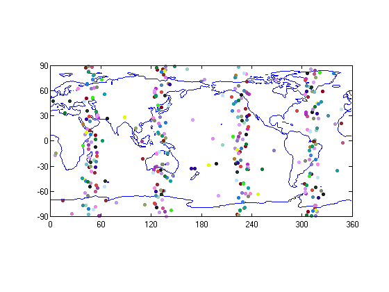
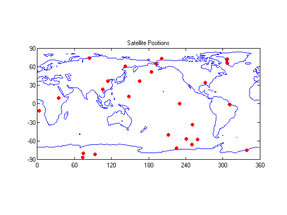

Contents
MECH 6970 Lab 2, Part 1
Robert Cofield, et al.
due 2013-09-30
Run this file in its directory - that's unrobust, I know, but it's late...
Prerequisites - MATLAB deps - `mydate` package (fileexchange) - `goGPS` (gogps-project.org) - I did add with subfolders - `rgc_matlab` (github.com/ozymandium/rgc_matlab) - just need to add top level to path - System deps - gzip - Python 2.7
genutil.ccc
Configurating
% UTC Time datevec from first GPZDA message of second data file (*.ubx) dtvec = [2013,09,10,17,37,34]; % here's hard-coding. oh well. % LLA position of the user (for skyplot) - got it from GPGLL message % 3236.36035,N,08529.22476,W user_lla = [coordutil.dms2d(32,36.36035,0),... -coordutil.dms2d(85,29.22476,0),... 250]; % that one's just a guess.
Time Figuring Outing
yrstr = num2str(dtvec(1)); doy = timeutil.datevec2doy(dtvec); % day of year, from rgc_matlab % with this we can get CDDIS ephems, but want precise ephem % get gps week and seconds into week [wk,sec] = mydategps(mydatenum(dtvec)); % you'll need the mydate package installed % day of week (0=Sun, 6=Sat) dow = weekday(datestr(dtvec))-1;
CDDIS Ephemeris Getting & Parsing
% find the internet address for CDDIS ephem % cddis = ftp('cddis.gsfc.nasa.gov'); % ftp object for the server % filename cddis_addr = ['pub/gps/data/daily/', yrstr, '/brdc/']; cddis_fname = ['brdc' sprintf('%3.3d',doy) '0.' yrstr(3:4) 'n.Z']; mkdir(['..' filesep 'data' filesep 'tmp']); % the paths here probably won't work on Windows .. Meh. system(['python ..' filesep 'data' filesep 'download_cddis_data.py ' cddis_addr cddis_fname ' ..' filesep 'data' filesep 'tmp/']); cddis_fname = cddis_fname(1:end-2); % take off the .Z curd=pwd(); parent=cd(cd('..')); cd(curd); disp([parent filesep 'data' filesep 'tmp' filesep cddis_fname '.Z']) %%%% TO GET TO RUN: % in rinex_get_nax, line 52, change to: % fid = fopen(file_nav,'r+'); %%%%%%% [ephem_full,~] = RINEX_get_nav([parent filesep 'data' filesep 'tmp' filesep cddis_fname '.Z']); % At this point you now have a 33x416 matrix of ephemeris datas. yippee.
Warning: Directory already exists. /home/rgcofield/gps_class/grp/data/tmp/brdc2530.13n.Z
JPL Precise Ephemeris
-- Unfinished.
% % find the internet address for JPL precise ephem % jpl_addr = ['http://igscb.jpl.nasa.gov/igscb/product/', num2str(wk), '/']; % folder % jpl_addr = [jpl_addr, 'igr', num2str(wk*10+dow), '.sp3.Z']; % filename % % urlwrite(jpl_addr, 'precise_ephem_jpl.rinex');
SV Position Calculation
assume that week # does not change during this data
gps.constants [ephem,svprn,t_oe] = gps.ephem_gogps2gavlab(ephem_full); % rearrange the rows svpos = zeros(3,32,length(svprn)/32); svpos_ae = svpos(1:2,:,:); % azimuth, elevation prn_data_cnt = ones(1,32); % which epoch for each SV we are on % need a rough transit time estimation range_est = 20e6; t_transit_est = range_est/c; % !? It may end up having different numbers of epochs for some SV's than % others?? %one row for each peice of data %columns: svnum,transmit time,ECEF,LLA,ENU output_data=cell(length(svprn),10); count=1; for k = 1:length(svprn) prn = svprn(k); % calculate ECEF position for each sv at each epoch t_tx = t_oe(k); [pos, clk_corr] = gps.calc_sv_pos(ephem(:,k), t_tx, t_transit_est); svpos(:,prn,prn_data_cnt(prn)) = pos; % find spherical coordinates for each satellite at each epoch %fprintf('sv positions, ECEF: %20.10f\t%20.10f\t%20.10f\n',pos); %fprintf('transit time: %20.15f\n', t_transit_est); %fprintf('transmit time: %20.15f\n', t_tx); [sv_lat,sv_lon,sv_alt] = coordutil.wgsxyz2lla(pos, 1000); %!!! It gets stuck here b/c the inputs are dead wrong. % SV pos relative to user in ENU [sv_lat,sv_lon]=wraplatlong(sv_lat,sv_lon); if abs(sv_alt)<18000000 continue; end % fprintf('sv positions, LLA: %20.10f\t%20.10f\t%20.10f\n',sv_lat,sv_lon,sv_alt); dp_enu = coordutil.wgslla2enu(sv_lat,sv_lon,sv_alt, user_lla(1),user_lla(2),user_lla(3)); [a,e,r] = cart2sph(dp_enu(1),dp_enu(2),dp_enu(3)); svpos_ae(:,prn,prn_data_cnt(prn)) = [a;e]; prn_data_cnt(prn) = prn_data_cnt(prn)+1; output_data{count,1}=svprn(k); output_data{count,2}=t_tx; output_data{count,3}=pos; output_data{count,4}=[sv_lat,sv_lon,sv_alt]; output_data{count,5}=dp_enu; count=count+1; %fprintf('\n') end load('topo.mat','topo','topomap1'); figure; contour(0:359,-89:90,topo,[0 0],'b') axis equal box on set(gca,'XLim',[0 360],'YLim',[-90 90], ... 'XTick',[0 60 120 180 240 300 360], ... 'Ytick',[-90 -60 -30 0 30 60 90]); hold on; destime=173734.00; % fprintf('\n\n\n\nSatellite Positons at GPS time: %20.10f\n',destime) pos_at_t=zeros(32,3); for k=1:32 part1plot(output_data,k); pos=part1fit(output_data,k,destime,4); [lat,long]=wraplatlong(pos(1),pos(2)); pos_at_t(k,:)=[lat,long,pos(3)]; % fprintf('SV: %4.0f\t Lat: %20.10f\tLong:%20.10f\tAlt: %20.10f\n',k,lat,long,pos(3)); end figure; contour(0:359,-89:90,topo,[0 0],'b') axis equal box on set(gca,'XLim',[0 360],'YLim',[-90 90], ... 'XTick',[0 60 120 180 240 300 360], ... 'Ytick',[-90 -60 -30 0 30 60 90]); hold on; scatter(pos_at_t(:,2),pos_at_t(:,1),40,'r','fill'); title('Satellite Positions') motion_of_sv=zeros(3600,3); for j=1:3600 pos=part1fit(output_data,25,destime-1800+j,4); motion_of_sv(j,:)=pos(1:3); end % figure; % contour(0:359,-89:90,topo,[0 0],'b') % axis equal % box on % set(gca,'XLim',[0 360],'YLim',[-90 90], ... % 'XTick',[0 60 120 180 240 300 360], ... % 'Ytick',[-90 -60 -30 0 30 60 90]); % hold on; % scatter(motion_of_sv(:,2),motion_of_sv(:,1),20,'r','fill'); % title('Satellite 20 Motion') % % figure; % plotdata=zeros(32,3); % for j=1:32 % plotdata(j,:)=output_data{j,3}; % end % skyplot(plotdata,1:32,coordutil.wgslla2xyz(32.605580,85.486546,180.30)); % 